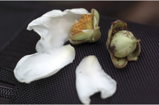
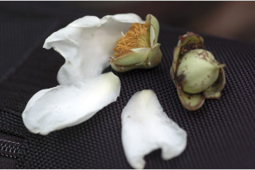

Vernacular names:
ಕನ್ನಡದ ಪ್ರಾದೇಶಿಕ ಹೆಸರು:
Vernacular names:
தமிழ் பெயர்:
Tamil: Mallaynangai, Nagacuram, Nagappu, Nangu, Nangil, Nangul, Suruli.
Malayalam: Churuli, Nagapoovu, Nanku, Vayanavu, Nagacampakam.
Kannada: Atha, Naga sampige.
English: Iron wood tree.
ಅತ್ತವರ, ನಾಗಸಂಪಿಗೆ,ನಾಗಕೇಸರ
Malayalam: ചുരുളി, നാഗപ്പൂവ്, നാങ്ക്, വയനാവ്, നാഗചമ്പകം.
மலைநங்கை, நாகாகுரம், நாகப்பூ, நாங்கு, நான்ஜில், நாங்குல், சுருளி.
Images
Swipe to see more >>
Botanical descriptions:
ಸಸ್ಯದ ವೈಜ್ಞಾನಿಕ ವಿವರ:
Botanical descriptions:
மரங்களின் பண்புகள்:
Habit:
ಪ್ರಕೃತಿ :
Habit:
வளரியல்பு:
Large trees, buttressed, up to 35 m tall.
35 ಮೀ ಎತ್ತರದವರೆಗೆ ಬೆಳೆಯುವ ಆನಿಕೆಗಳುಳ್ಳ ದೊಡ್ಡಗಾತ್ರದ ಮರಗಳು.
വപ്രമൂലത്തോടുകൂടിയ, 35 മീറ്റര് വരെ ഉയരമുള്ള, വന്മരങ്ങള്
பெரிய மரங்கள், தாங்கு வேர்களுடையது (பட்ரஸ்டு), 35 மீ. உயரம் வரை வளரக்கூடியது.
Trunk & Bark:
ಕಾಂಡ ಮತ್ತು ತೊಗಟೆ:
Trunk & Bark:
தண்டு மற்றும் மரப்பட்டை:
Bark brown with irregularly large flaky peelings; blaze reddish.
ತೊಗಟೆ ಕಂದು ಬಣ್ಣ ಹೊಂದಿದ್ದು ಅನಿಯತವಾಗಿ ಸುಲಿದ ದೊಡ್ಡ ಗಾತ್ರದ ಚಕ್ಕೆಗಳನ್ನು ಹೊಂದಿರುತ್ತದೆ; ಕಚ್ಚು ಮಾಡಿದ ಜಾಗ ಕೆಂಪು ಬಣ್ಣದಲ್ಲಿರುತ್ತದೆ.
ക്രമരഹിതമായി, വലിയ കഷണങ്ങളായി, അടര്ന്നുപോകുന്ന പുറംതൊലി; വെട്ടുപാടിന് ചുവപ്പ് നിറമാണ്.
மரத்தின் பட்டை ப்ரவுன், ஒழுங்கற்ற பெரிய செதில்களாக பெயரும் தன்மையுடையவை; உள்பட்டை சிவப்பு நிறமானது.
Branches and Branchlets:
ಕವಲುಗಳು ಮತ್ತು ಕಿರುಕೊಂಬೆಗಳು:
Branches and Branchlets:
சாறு:
Branchlets slender, terete, glabrous.
ಕಿರುಕೊಂಬೆಗಳು ದುಂಡಾಗಿದ್ದು, ತೆಳುವಾಗಿದ್ದು ರೋಮರಹಿತವಾಗಿರುತ್ತವೆ.
അരോമിലമായ, നേര്ത്ത, ഉപശാഖകള്.
சாறு அழுக்கடைந்த வெள்ளை நிறமானது.
Exudates:
ಜಿನುಗು ದ್ರವ:
Exudates:
இலைகள்:
Latex dirty white.
ಸಸ್ಯಕ್ಷೀರ ಕೊಳಕು ಬಿಳಿ ಬಣ್ಣ ಹೊಂದಿರುತ್ತದೆ .
മുഷിഞ്ഞ വെളുത്തനിറത്തിലുള്ള സ്രവം.
இலைகள் தனித்தவை, எதிரடுக்கமானவை, குறுக்குமறுக்கமானவை; இலைக்காம்பு மெல்லியது, 0.5-1.2 செ.மீ. நீளமானது, குறுக்குவெட்டுத் தோற்றத்தில் பிளேனோகான்வக்ஸ், இலை அலகு 7.5-14 X 1.5-3.5 செ.மீ., குறுகிய நீள்வட்டம் வடிவம் முதல் குறுகிய ஈட்டி வடிவமானது, அலகின் நுனி குறுகிய அதிக்கூரியது, அலகின் தளம் கூரியது, அலகின் விளிம்பு முழுமையானது, அலகின் கீழ்பரப்பு மெழுகு பூசியது போன்றது அல்லது சாம்பல் கலந்த நீல நிறமானது (க்களாக்கஸ்); இரண்டாம் நிலை நரம்புகள் அதிகமானவை, மெல்லியது, நெருக்கமானவை, இணையானவை, மையநரம்பிற்கு கிடைமட்டமானவை, சிலசமயங்களில் தெளிவற்றது.
Leaves:
ಎಲೆಗಳು:
Leaves:
மஞ்சரி / மலர்கள்:
Simple, opposite, decussate; petiole slender 0.5-1.2 cm long, planoconvex in cross section; lamina 7.5-14 x 1.5-3.5 cm, narrow elliptic to narrow lanceolate, apex narrowly acuminate, base acute, margin entire, glaucous beneath; secondary_nerves many, slender, closely parallel, perpendicular to midrib, sometimes obscure.
ಎಲೆಗಳು ಸರಳವಾಗಿದ್ದು,ಕತ್ತರಿಯಾಕಾರದ ಅಭಿಮುಖ ಜೋಡನಾ ವ್ಯವಸ್ಥೆ-ಯಲ್ಲಿರುತ್ತವೆ; ಎಲೆತೊಟ್ಟುಗಳು 05 – 1.2 ಸೆಂ.ಮೀ, ಉದ್ದಹೊಂದಿದ್ದು ಅಡ್ಡ ಸೀಳಿದಾಗ ಸಪಾಟ ಪೀನಮಧ್ಯ ಆಕಾರವನ್ನು ಹೊಂದಿರುತ್ತವೆ; ಎಲೆಪತ್ರಗಳು 7.5 ರಿಂದ 14 ಸೆಂ. ಮೀ ಉದ್ದ,1.5 ರಿಂದ 3.5 ಸೆಂ ಮೀ ಅಗಲವಿದ್ದು, ಸಂಕುಚಿತವಾದ ಅಂಡಾಕಾರದಿಂದ ಸಂಕುಚಿತವಾದ ಭರ್ಜಿಯ ಆಕಾರಹೊಂದಿದ್ದು, ಇಕ್ಕಟ್ಟಾದ, ಕ್ರಮೇಣ ಚೂಪಾಗುವ ತುದಿ, ಚೂಪಾದ ಬುಡ, ನಯವಾದ ಅಂಚನ್ನು ಹೊಂದಿದ್ದು, ಮಾಸಲು ಬೂದು ಹಸಿರು ಬಣ್ಣವುಳ್ಳ ತಳಭಾಗ ಹೊಂದಿರುತ್ತವೆ; ಎರಡನೇ ದರ್ಜೆಯ ನಾಳಗಳು ಹೆಚ್ಚಿನ ಸಂಖ್ಯೆಯಲ್ಲಿದ್ದು, ತೆಳುವಾಗಿದ್ದು, ತೀರಾ ಸನಿಹವಾದ ಸಮಾಂತರದಲ್ಲಿದ್ದು ಮಧ್ಯನಾಳಕ್ಕೆ ಲಂಬವಾಗಿರುತ್ತವೆ ಕೆಲವು ವೇಳೆ ಅಸ್ಪಷ್ಟ.
സമ്മുഖ, ഡെക്കുലേറ്റ് ക്രമത്തിലുള്ള, ലഘുപത്രങ്ങള്; 0.5 സെ.മി തൊട്ട് 1.2 സെ.മി വരെ നീളമുള്ള, നേര്ത്ത ഇലഞെട്ടിന് ഛേദത്തില്, മുകളില് പരന്നും കീഴ്ഭാഗം ഉരുുമിരിക്കുന്ന ഘടനയാണ്; പത്രഫലകത്തിന് 7.5 സെ.മി മുതല് 14 സെ.മി വരെ നീളവും 1.5 സെ.മി മുതല് 3.5 സെ.മി വരെ വീതിയും, വീതി കുറഞ്ഞ ദീര്ഘവൃത്താകാരം തൊട്ട് വീതികുറഞ്ഞ കുന്താകാരം വരെ, പത്രാഗ്രം നേര്ത്ത, ചെറുവാലോടുകൂടിയതും, പത്രാധാരം നിശിതവുമാണ്, അവിഭജിതമായ അരികുകള്, കീഴ്ഭാഗത്തിന് നീലരാശി കലര്ന്ന നിറം; മുഖ്യസിംക് ലംബമായി നില്ക്കുന്നതും, വളരെ അടുത്ത്, സമാന്തരമായി പോകുന്നതുമായ, ധാരാളം ദ്വിതീയ ഞരമ്പുകള്, ചിലപ്പോള് ഇവ അസ്പഷ്ടമാണ്.
மலர்கள் இருபாலானவை, தனித்தவை அல்லது ஜோடியாக இலைக்கோணங்களில் காணப்படுகின்றன; அல்லி இதழ்கள் வெள்ளை நிறமானவை; மகரந்ததாள் அதிகமானவை, ஆரஞ்சு மஞ்சள் நிறமானவை.
Inflorescence / Flower:
ಪುಷ್ಪಮಂಜರಿ/ಹೂಗಳು:
Inflorescence / Flower:
கனி / விதை:
Flowers bisexual, solitary or in pairs, axillary; petals white; stamens many, orange yellow.
ಹೂಗಳು ದ್ವಿಲಿಂಗಿಗಳು,ಒಂಟಿಯಾಗಿ ಅಥವಾ ಜೋಡಿಯಾಗಿ ಅಕ್ಷಾಕಂಕುಳಿನಲ್ಲಿರುತ್ತವೆ; ಕೇಸರಗಳು ಹೆಚ್ಚಿನ ಸಂಖ್ಯೆಯಲ್ಲಿದ್ದು ಕಿತ್ತಳೆ ಬಣ್ಣದಲ್ಲಿರುತ್ತವೆ.
ദ്വിലിംഗികളായ പൂക്കള്, ഒറ്റക്കോ ജോഡികളായോ കക്ഷങ്ങളില് ഉാകുന്നു; വെളുത്ത ദളങ്ങള്; ഓറഞ്ച്-മഞ്ഞ നിറത്തിലുള്ള ധാരാളം കേസരങ്ങള്.
முழுச்சதைகனி (பெர்ரி), முட்டை வடிவானது முதல் கோளவடிவானது, நுனியில் அலகு போன்ற நீட்சியுடையது, கோடுகளுடையது, 1-4 விதைகளையுடையது.
Fruit and Seed:
ಕಾಯಿ /ಬೀಜ:
Fruit and Seed:
:
Berry, ovoid to globose, apiculate, striate, 1-4 seeded.
ಬೆರ್ರಿಗಳು ಅಂಡಾಕಾರದಿಂದ ಗೋಳಾಕಾರದಲ್ಲಿದ್ದು, ಅಗ್ರ ಸೂಕ್ಷ್ಮವಾದ ಮೊನಚು ಮುಳ್ಳನ್ನು ಹೊಂದಿರುತ್ತವೆ ಹಾಗೂ ಉಬ್ಬು ಸಾಲಿನ ಗುರುತುಗಳನ್ನು ಹೊಂದಿರುತ್ತವೆ ಹಾಗೂ ಒಂದರಿಂದ ನಾಲ್ಕು ಬೀಜಗಳನ್ನೊಳಗೊಂಡಿರುತ್ತವೆ.
കായ, 1 തൊട്ട് 4 വരെ വിത്തുള്ളതും, വരകളുള്ളതും, അറ്റത്തൊരു മുനപ്പോടുകൂടിയതുമായ ആണ്ഡാകാരം മുതല് ഗോളാകാരം വരെയുമായ ബെറിയാണ്.
Literatures:
ಗ್ರಂಥ ಸೂಚಿ:
Literatures:
சான்று ஏடு:
Hooker, Fl. Brit. Ind. 1: 277. 1874; Gamble, Fl. Madras 1: 77. 1997 (re. ed); Sasidharan, Biodiversity documentation for Kerala- Flowering Plants, part 6: 42. 2004; Saldanha, Fl. Karnataka 1: 210. 1996; Cook, Fl. Bombay 1: 81. 1902.
Hooker, Fl. Brit. Ind. 1: 277. 1874; Gamble, Fl. Madras 1: 77. 1997 (re. ed); Sasidharan, Biodiversity documentation for Kerala- Flowering Plants, part 6: 42. 2004; Saldanha, Fl. Karnataka 1: 210. 1996; Cook, Fl. Bombay 1: 81. 1902.
Hooker, Fl. Brit. Ind. 1: 277. 1874; Gamble, Fl. Madras 1: 77. 1997 (re. ed); Sasidharan, Biodiversity documentation for Kerala- Flowering Plants, part 6: 42. 2004; Saldanha, Fl. Karnataka 1: 210. 1996; Cook, Fl. Bombay 1: 81. 1902.
Hooker, Fl. Brit. Ind. 1: 277. 1874; Gamble, Fl. Madras 1: 77. 1997 (re. ed); Sasidharan, Biodiversity documentation for Kerala- Flowering Plants, part 6: 42. 2004; Saldanha, Fl. Karnataka 1: 210. 1996; Cook, Fl. Bombay 1: 81. 1902.


 
